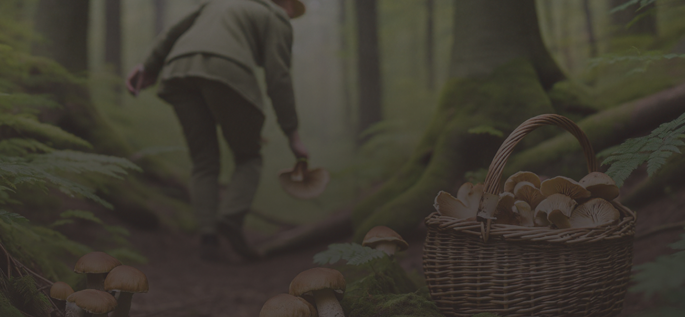

Discover the World of Mushroom Foraging
Mushroom foraging is the art and science of identifying and collecting wild mushrooms.
It's a practice that combines outdoor exploration, botanical knowledge, and culinary adventure. Foragers venture into forests, fields, and even urban green spaces to discover these hidden treasures.
But beware – this hobby requires careful study and respect for nature, as some mushrooms can be dangerous if misidentified.